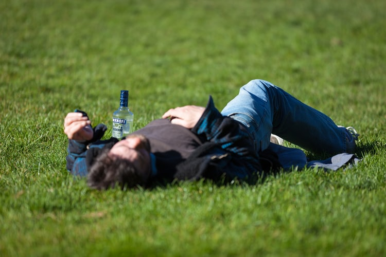
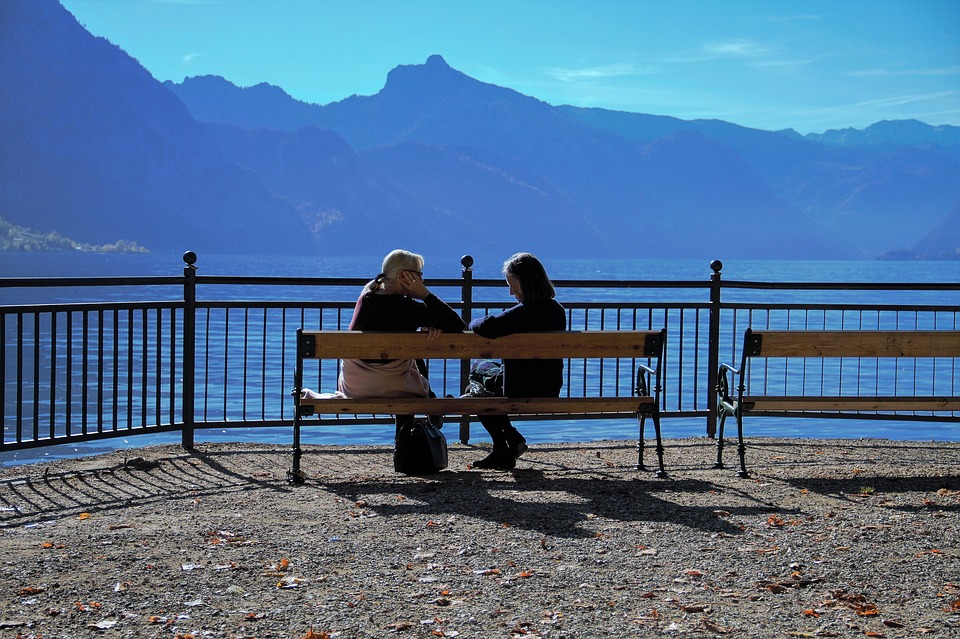
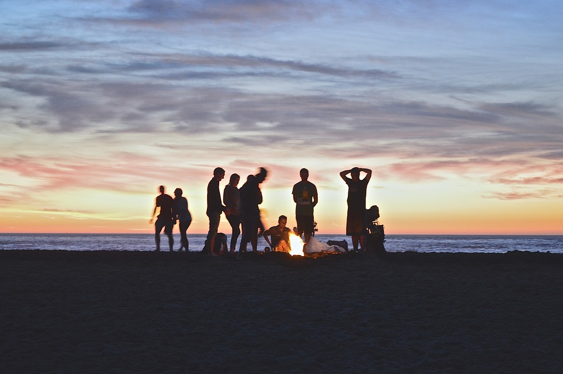
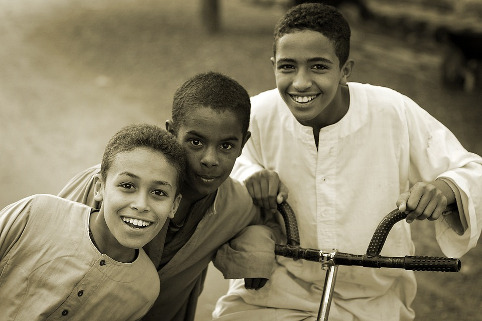

Looking after your mental health.
Adopting a healthy lifestyle.
Regular exercise, a balanced diet, and a disciplined sleeping schedule can boost your
self-esteem and help your concentration. A healthy lifestyle will also increase dopamine production in your brain and make you
feel more rewarded for your work.
Drinking in moderation.
Drinking alcohol is not a safe way to cope with mental health difficulties, as
alcohol withdrawal symptoms end up negatively affecting your brain and the rest of your body. Both men and women should stay
within the alcohol limits of 14 units per week.

Talking about your feelings.
Do not be afraid to talk about your feelings with close family members, friends, or
anyone else you prefer. Just being listened to can help you feel more supported. Remember, talking about your feelings is
not a sign of weakness but rather a sign of taking charge of your wellbeing.

Asking for help.
We all sometimes get tired or overwhelmed by how we feel when things go wrong.
Do not be afraid to ask someone for help in these situations. You could join a support group, find a councelor, or visit a guidance
practitioner. You could also talk to an emergency hotline.
Keeping in touch.
Strong family ties and supportive friends can help you deal with the stresses of
life by caring for you and keeping you grounded. They can also offer different points of view and help you have perspective
over various issues. In essence, they can help you appreciate life more.
Taking a break.
A change of scenery can be enough to de-stress you. Make sure you often take breaks
from work or other stressful environments, even if it's only for a few minutes. Listen to your body. Listen to your mind.
Sometimes the outside world can wait.

Accepting who you are.
Always remember that you are unique, you are beautiful, and you are valued.
Try to learn to feel good in your body rather than wishing to be more like someone else. Accepting who you are is vital for
learning new skills, moving on from failures, and being more social.

Learning to cope with different forms of mental disorders.
Find a routine and stick to it.
Face your fears.
Try psychological therapy.
Don't shy away from taking antidepressants.
Challenge negative thinking.
Purchase a light therapy box.
Adopt cognitive behavioral therapy.
Identify and learn to avoid your triggers.
Find coping techniques to limit triggers in environments you cannot change.
Try cognitive behavioral therapy.
Discover strategies to cope with panic or anxiety attacks.
Use calming breathing exercises.
Put your anxiety into perspective.
Challenge your sense of helplessness.
Accept that the memories of the trauma will not ever completely disappear.
Get professional help.
Try out eye movement desensitization and reprocessing.
Join a PTSD support group.
Take actions that will boost your self-esteem and your sense of power.
Global Suicide Hotline Resources.
International Suicide Hotline Numbers
United States
National Suicide Prevention Lifeline
Lifeline Crisis Chat
Veterans/Military Crisis Line (for active U.S. service members, veterans, and family members)
The Trevor Project (for LGBT youth, friends and family members)
Worldwide
Befrienders
Australia
Lifeline Australia
Kids Helpline
Headspace
Austria
Rat auf Draht
TelefonSeelsorge – Notruf 142
Belgium
Centrum Ter Preventie Van Zelfdoding
Brazil
CVV
Canada
Kids Help Phone (for youth under 20)
For people over 20, find a crisis centre that serves your area:
Czech Republic
Linka bezpečí
Pražská linka důvěry
Linka důvěry Ostrava
Linka duševní tísně Most
Linka důvěry DKC
Denmark
Livslinien
Børne
Finland
Suomen Mielenterveysseura
France
S.O.S Amitié
Germany
Telefonseelsorge
Nummer gegen Kummer
Greece
Klimaka NGO
Suicide Help Greece
Hong Kong
The Samaritan Befrienders Hong Kong
The Samaritan Befrienders Hong Kong
The Samaritans Hong Kong
Hungary
Magyar Lelki Elsősegély Telefonszolgálatok Szövetsége
Kek Vonal
India
AASRA
Israel
ERAN
SAHAR (Emotional support chat line)(Hebrew)
SAHAR (Emotional support chat line)(Arabic)
Italy
Telefono Azzurro
Telefono Amico
Latvia
Skalbes
Lithuania
Lithuanian Association of Emotional Support Lines
Vaikų linija (Child line)
Jaunimo linija (Youth line)
Vilties linija (Hope line)
Pagalbos moterims linija (Women's line)
Linija Doverija (Support for Russian-speaking clients)
Luxembourg
SOS Détresse – Hëllef iwwer Telefon
Kanner-Jugendtelefon
Mexico
Consejo Ciudadano
Instituto Hispanoamericano de Suicidologia, A.C
Netherlands
Foundation 113 Online
New Zealand
National Depression Initiative
The Lowdown
Youthline
Norway
Kirkens SOS
Poland
Fundacja Dzieci Niczyje
Serbia
Centar Srce
Singapore
Samaritans of Singapore (SOS)
South Africa
The South African Depression and Anxiety Group (SADAG)
South Korea
중앙자살예방센터 (Korea Suicide Prevention Center)
보건복지부 보건복지콜센터 (Ministry of Health & Welfare Call Center)
정신건강증진센터 정신건강위기상담전화 (Mental Health Center Crisis Counseling)
Spain
Teléfono de la Esperanza
Sweden
Mind
Switzerland
Tel 143 - La Main Tendue – Die Dargebotene Hand – Telefono Amico
Taiwan
Taiwan Suicide Prevention Center
United Kingdom / Ireland
Samaritans